▾
(
▾
)
Store
ROW 2


OK
A new release is available
(release notes)
Your current version is
. Download the new
installer!
Download
Ignore now
Skip version
Create tag at this commit
OK
Cancel
Create branch from this commit
OK
Cancel
none
feature/
release/
hotfix/
Prefix:
ERROR -- Cannot find "git"
Download and install "git" from :
https://git-scm.com/downloads
Close Pragma-git
WARNING -- detached HEAD !
You've created work in an old revision.
Temp branch : keep work in a temporary branch
Merge : keep work and merge with
select branch
Delete : drop work done after checkout of old revision
OK
Cancel
WARNING
-- Do you want to initialize this folder as a git repository ?
Start working in branch
master
develop
Initialize
Cancel